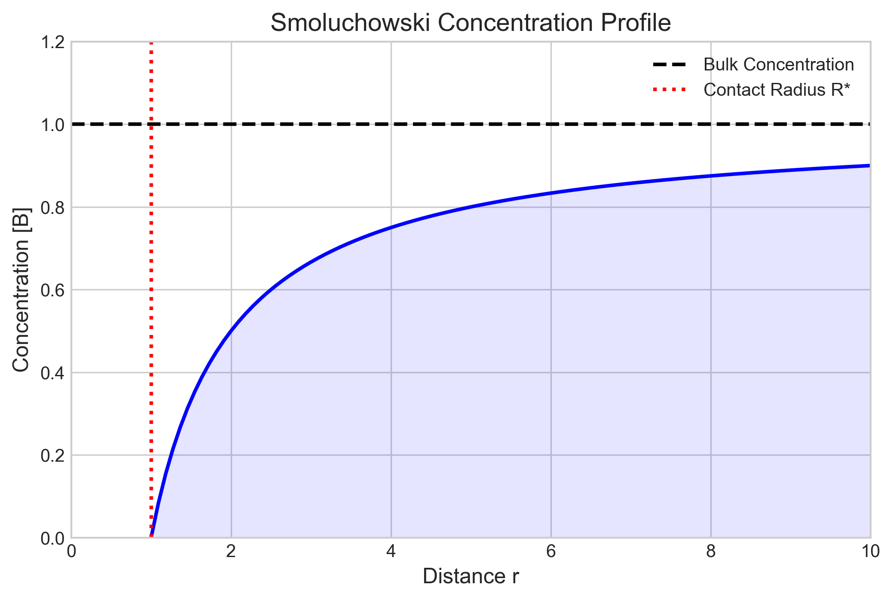

For diffusion-controlled reactions:
Since viscosity $\eta$ decreases with $T$, rate increases.
Apparent $E_a \approx 10-20$ kJ/mol (viscosity activation energy).
| Reaction | $k$ (M$^{-1}$s$^{-1}$) | Type |
|---|---|---|
| H$^+$ + OH$^-$ | $1.4 \times 10^{11}$ | Fast (Grotthuss) |
| Radical Recombination | $\sim 10^{10}$ | Diffusion Limit |
| Enzyme-Substrate | $\sim 10^8 - 10^9$ | Near Limit |
| Sucrose Hydrolysis | $10^{-5}$ | Activation Controlled |
When reaction and diffusion compete:
$\lambda$ (Reaction-Diffusion Length):
Distance a molecule diffuses before reacting.
Important for biological patterns and catalysis.

Explore these concepts in the Jupyter Notebook:
Scan to open on mobile